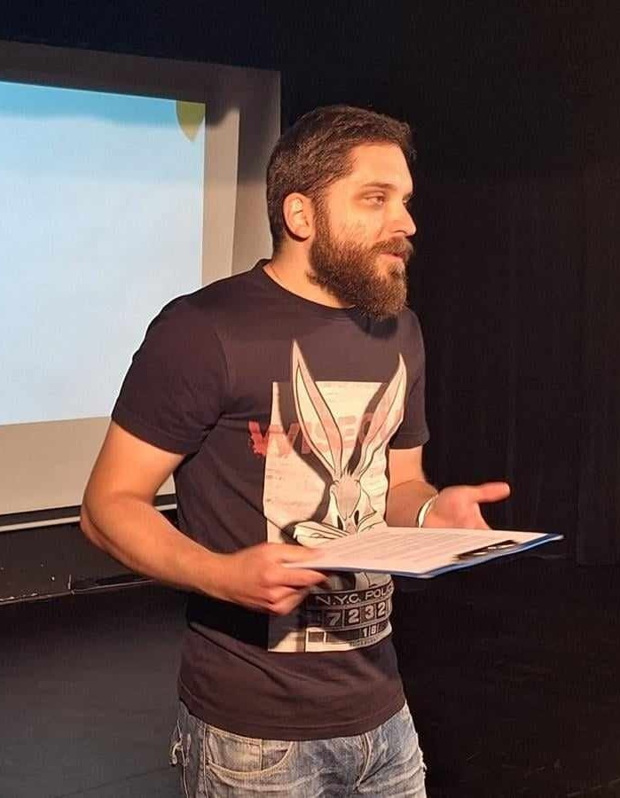

Jan Sławiński Copywriting & Social Media
Cześć, nazywam się Jan Sławiński i napiszę dla Ciebie tekst. Interesuję się popkulturą, ale na przestrzeni lat z powodzeniem tworzyłem treści między innymi dla branż: księgarskiej, kurierskiej, motoryzacyjnej, weterynaryjnej, budowlanej, ogrodniczej, podróżniczej czy zabawkarskiej.